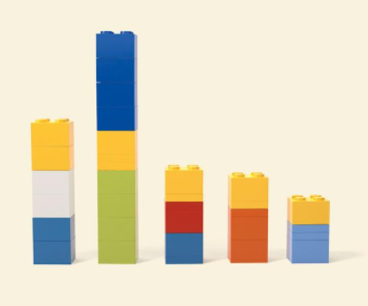
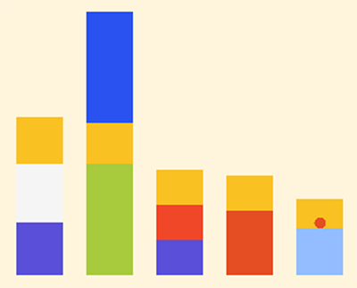
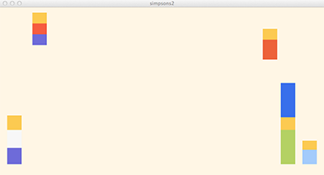
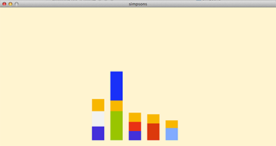

You will program a simple advertisement in the style of a real ad campaign that used legos to represent popular TV characters. Here's an example:
| The Actual Ad | Programmed in p5 |
|---|---|
|  |  |
You may choose to start from scratch or use the starter code as a starting point.
Choose one of the ads from the real ad campaign shown here.
Program your ad in the center of the screen, making sure each character lines up on the same baseline (see the Simpson ad image).
fill(r,g,b) function, where r, g, and b are the three color values. Once set, all following shapes are filled with that color until a new fill() command changes the color.noStroke() will remove the outlines around your shapes.At the top of your code, add an x_position and y_position variable for each ad member, then add these variables into your code (as shown in class on the second day of working on the lab). Examples for the Simpsons variables are shown below. Run your code, and iteratively adapt the variable's values so that each character is in a corner.
| Character | Variable Names |  |
|---|---|---|
| Homer | homer_x, homer_y |
|
| Marge | marge_x, marge_y |
|
| Bart | bart_x, bart_y |
|
| Lisa | lisa_x, lisa_y |
|
| Maggie | maggie_x, maggie_y |
To understand our programs p5js needs to know what variables we will use in our program, so we declare them. Declarations come at the start of our program (before setup()) by writing code such as let position = 0;.
This line of code tells p5js several things:
position is a variable that will be used in the program.position starts with the value 0.
A variable holds a value that can change. For example, if the variable position holds the value 21 and then later in the program we write position = 23;, then the value of position has changed from what it was (21) to 23. Variables are important to dynamic programs, because values change all the time.
Program your ad to start in the corners and move to the center of the screen. If you have 3 characters, pick 3 different corners; if you have 4 characters, use all 4 corners; if you have more than 4 characters, you can have multiple characters start in the same corner.
You will be adding statements like homer_x = homer_x + 1; or homer_x = homer_x - 1; into your code to make this movement happen.
Here we are using the fact that the draw() routine refreshes the image several times per second. Each time it runs draw() it repeats the "change" operation (such as homer_x = homer_x + 1;). This alters the variable's value. By using that variable to set the position of shapes, we can make your characters move across the screen!
| ==> |  |
Finally, you will want to program your ad to stop once it has reached the center. To do this you will want to use `if(...)` statements or `homer_x_speed` like shown in class.
Another option could be look up the `min()` and `max()` functions provided by p5/processing.
You are done when:
Note that the Definition of Done does not include any posting online or other submission of your final product. We will do this together in class.
adapted from UW CSE120